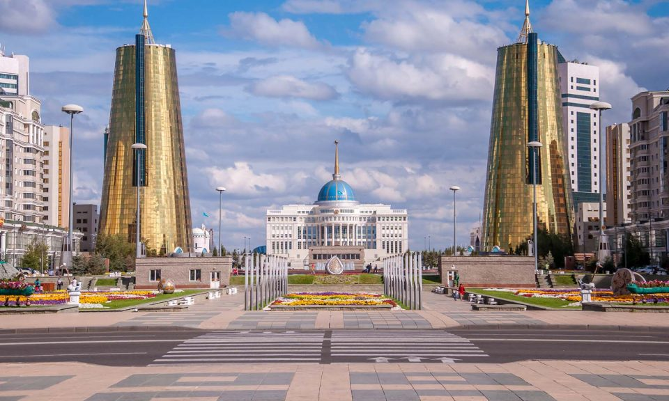

Above is a collection of pictures of places that I would like to oneday
visit. They consist of many diverse places. Such as Japan(top left), an Asian
island of the coast of China. Or Kazakhstan (top center), a Central Asian
country that used to be a part of the USSR. The two countries on the right
are places where my family is from, Italy(top right) and Ireland(bottom right).
Russia(bottom center) happens to also be the country where my girlfriend is
adopted from. Perhaps the country least known is Greenland(bottom left). Greenland
is a country that not many people have been to before, in fact, it isn't even
a fully independent country. Rather it is a dominion of Denmark.